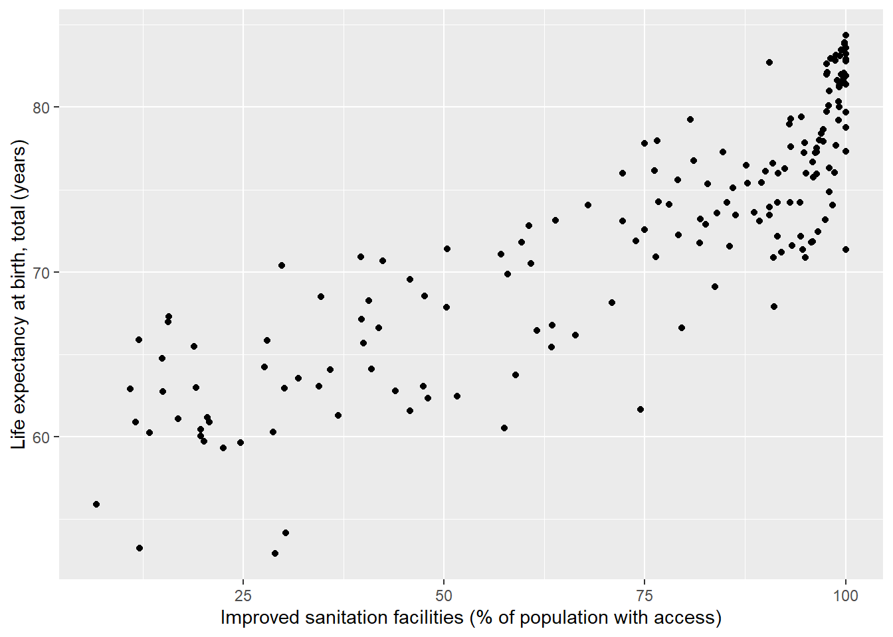
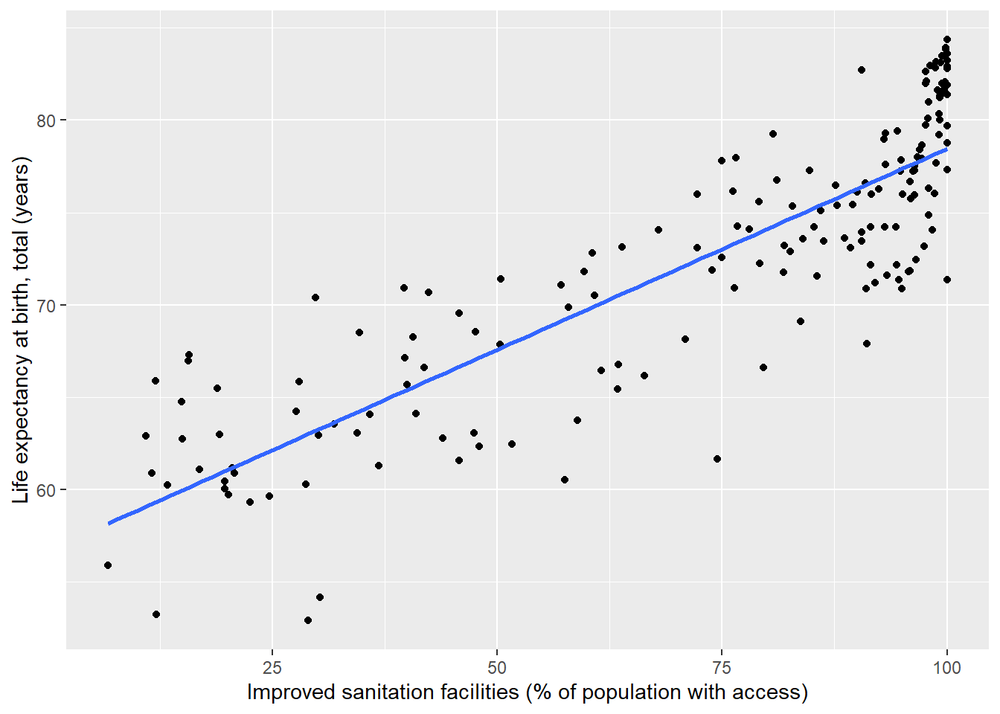

2 Measures of dispersion and visualizing relationships
2.1 Learning goals
2.1.1 Conceptual
- Understand and interpret common measures of dispersion
- Interpret scatterplots and crosstabulations
2.1.2 SPSS
- Add measures of dispersion to your descriptive statistics output
- Create scatterplots (interval/ratio data) and crosstabulations (nominal and ordinal data)
- Recode existing data into new variables
2.2 Measures of dispersion
In this course, we will consider three measures of dispersion.
2.2.1 The standard deviation
The standard deviation is defined as:
\[ S = \sqrt\frac{\sum_{i=1}^{n}{(x_i-\bar{x})^2}}{n-1} \]
Computation of the standard deviation involves:
- Calculating the sample mean \(\bar{x}\)
- Subtracting \(\bar{x}\) from each “raw” value of \(x\) to compute deviations
- Squaring the deviations from step 2 \((x_i - \bar{x})^2\)
- Summing the deviations \(\sum_{i = 1}^{n}\)
- Dividing the deviations by the number of observations (\(n\)) minus 1
- Taking the square root of 5
The standard deviation can be roughly interpreted as the average deviation from the sample mean in the data. Much like the mean, this measure of dispersion is mot appropriate for interval/ratio level data.
2.2.2 The range
The range is simply the difference between the maximum and minimum values in the data, and can be written as:
\[ range = max(x_1, x_2, ..., x_n) - min(x_1, x_2, ..., x_n) \]
2.2.3 The interquartile range (IQR)
This represents the spread of the middle 50% of the data and is calculated as:
\[ IQR = Q_3 - Q_1 \]
\(Q_3\) and \(Q_1\), are, respectively, the 75th and 25th percentiles of the data.To find these for data \(x\) with \(n\) elements:
\(Q_1(x) = x_{(\frac{n+1}{4})}\)
\(Q_3(x) = x_{(\frac{3(n+1)}{4})}\)
Where the position index for the quartile is not a whole number, we can average the values from the two nearest whole number positions to find our quartile. For example, for data with \(n = 100\):
- \(Q_1(x) = x_{(\frac{101}{4})} = 25.25\)
In the above case, we would average the 25th- and 26th-ranked values of \(x\) to find \(Q_1(x)\).
2.3 Visualizing relationships between variables
2.3.1 Scatterplots
Scatterplots are useful for visualizing relationships between interval/ratio variables. In this course, our convention will be to place independent variables (IVs) on the x-axis and dependent variables (DVs) on the y-axis.
Note 2.1: IVs and DVs
An independent variable is the presumed cause of effects on a dependent variable. See the lecture notes for further information.
The variables wdi_lifexp (life expectancy at birth) and wdi_water (percentage of population with access to improved water) are appropriate for scatterplotting. If there is a causal relationship between these two variables, then the most intuitive direction of influence would be from wdi_water to wdi_lifexp, so wdi_water will be our IV (x-variable) and wdi_lifexp our DV (y-variable).
We can see a noisy, yet positive relationship between a country’s percentage access to an improved water source and its life expectancy at birth. It is also possible to fit a linear model to the data and plot the fit line:

2.3.2 Crosstabulations
Crosstabulations (crosstabs) are a useful method for visualizing relationships among combinations of ordinal and nominal-level variables with relatively few unique categories. For example, let’s imagine we are interested how freedom of the press varies across countries in different regions of the world. In the World Development Indicators dataset (WDI), we can examine this with the variables region and fhp_status5 (freedom of the press score, as rated by Freedom House). region is measured at the nominal level (as we cannot rank regions based on name alone), where fhp_status5 has ranks press freedom from 1 (“Free”) to 3 (“Not Free”).
A simple crosstab will show us the number of countries within regions which fall into the different categories of press freedom, and also give us the marginal counts.1 On this course, our convention will be to place IVs in the columns and DVs in the rows, so our most logical approach would be to place region in the columns and fhp_status5 in the rows. This allows us to see how the distribution of counts across the levels of press freedom (the DV) vary across the different regions (the IV). In other words, we compare counts horizontally, between different regions.
| East Asia & Pacific | Europe & Central Asia | Latin America & Caribbean | Middle East & North Africa | North America | South Asia | Sub-Saharan Africa | Total | |
|---|---|---|---|---|---|---|---|---|
| Free | 13 | 27 | 14 | 1 | 2 | 0 | 3 | 60 |
| Partly Free | 7 | 14 | 14 | 4 | 0 | 4 | 26 | 69 |
| Not Free | 10 | 11 | 5 | 15 | 0 | 4 | 18 | 63 |
| Total | 30 | 52 | 33 | 20 | 2 | 8 | 47 | 192 |
While we can see trends, it can be more informative to view the press freedom category counts as percentages (or proportions) within countries. This adjusts for differences in the number of countries within regions and shows us the proportional distribution of counts for the freedom categories.
| East Asia & Pacific | Europe & Central Asia | Latin America & Caribbean | Middle East & North Africa | North America | South Asia | Sub-Saharan Africa | Total | |
|---|---|---|---|---|---|---|---|---|
| Free | 43.33 | 51.92 | 42.42 | 5 | 100 | 0 | 6.38 | 31.25 |
| Partly Free | 23.33 | 26.92 | 42.42 | 20 | 0 | 50 | 55.32 | 35.94 |
| Not Free | 33.33 | 21.15 | 15.15 | 75 | 0 | 50 | 38.30 | 32.81 |
| Total | 100.00 | 100.00 | 100.00 | 100 | 100 | 100 | 100.00 | 100.00 |
2.4 SPSS explainer video
[WDI measures of dispersion, scatterplot, crosstab, recode]
That is, the counts in the categories of one variable when we ignore the levels of the other.↩︎